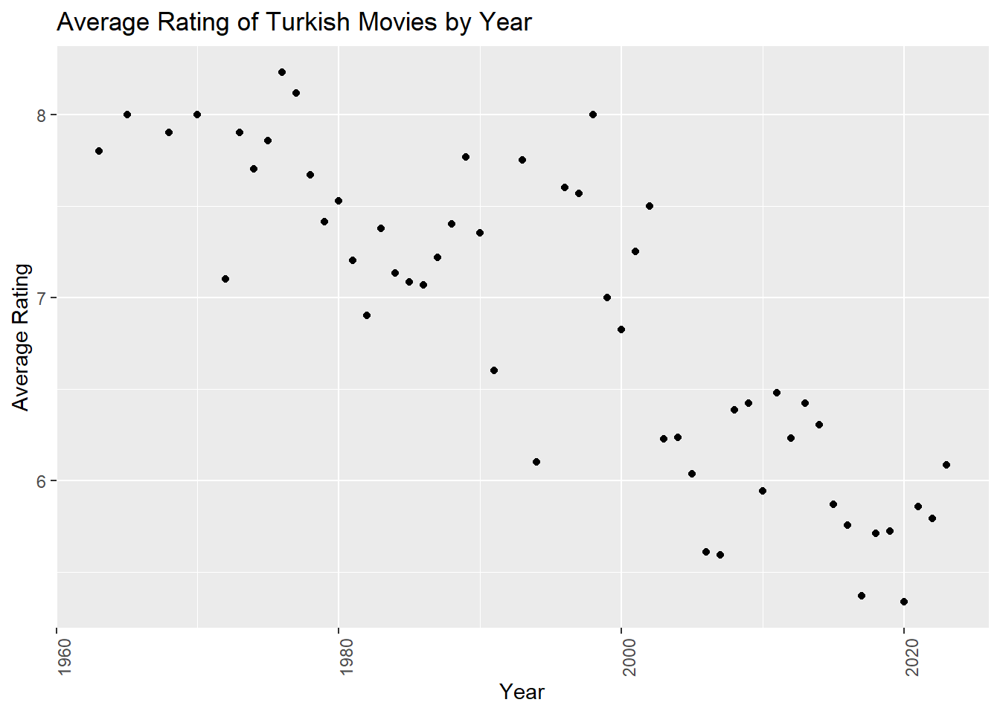
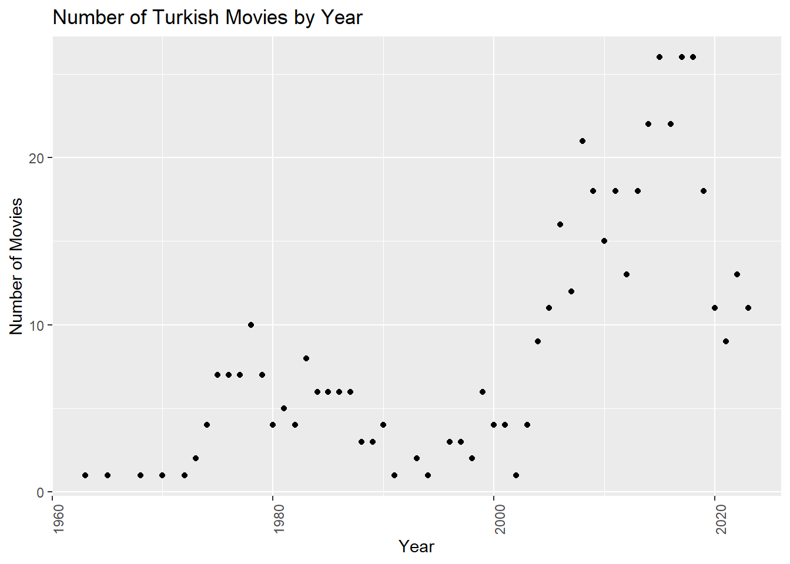
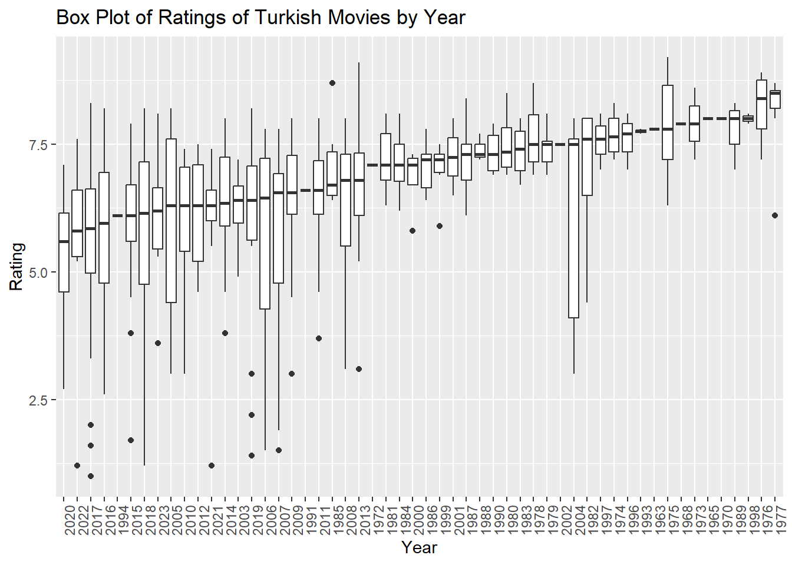

movie_data <- movie_data |>arrange(desc(Rating))top_5 <-head(movie_data, 5)bottom_5 <-tail(movie_data, 5)library(knitr)kable(rbind(top_5, bottom_5), caption ="The Top 5 Movies and The Worst 5 Movies")
From the Top 5 section, I only watched Hababam S??n??f?? and CM101MMXI Fundamentals. Among these two movies, Hababam S??n??f?? may be my favorite. I haven’t watched any of the 5 worst movies. I think the IMDB ranking is reasonable.
Title Year Duration Rating Votes
1 Sevmek Zamani 1965 86 8.0 7127
2 A.R.O.G 2008 127 7.3 44633
c)
#plot the rating averages as a scatter plotlibrary(dplyr)library(ggplot2)rating_averages <- movie_data %>%group_by(Year) %>%summarise(Average_Rating =mean(Rating))ggplot(rating_averages, aes(x = Year, y = Average_Rating)) +geom_point() +labs(title ="Average Rating of Turkish Movies by Year",x ="Year",y ="Average Rating")+theme(axis.text.x =element_text(angle=90, hjust =1))

From this graph, we can see that the average rating vary over the years, but there is an overall decreasing trend. For example, while average rating were around 8 in the early 1970s, they dropped to around 6 in the 2010s. This shows that the average vote value of Turkish films has decreased over time.
However, average rating alone may not be a sufficient indicator. Because a different number of movies are shot every year, which may affect the average ating. For example, fewer shots were taken in 1960 than in 2000. This does not necessarily mean that the films shot in 1960 were of very high quality. Therefore, it is necessary to consider the number of films.
# plot the number of movies over the yearsmovie_counts <- movie_data %>%count(Year)ggplot(movie_counts, aes(x = Year, y = n)) +geom_point() +labs(title ="Number of Turkish Movies by Year",x ="Year",y ="Number of Movies") +theme(axis.text.x =element_text(angle=90, hjust =1))

From this graph, we can see that the number of movies is increasing over the years, but there are some fluctuations. It shows us that it increases over time.
#To plot the box plots of ratings over the yearsmovie_data <- movie_data %>%mutate(Year =reorder(Year, Rating, FUN = median)) ggplot(movie_data, aes(x =factor(Year), y = Rating)) +geom_boxplot() +labs(title ="Box Plot of Ratings of Turkish Movies by Year",x ="Year",y ="Rating") +theme(axis.text.x =element_text(angle=90, hjust =1))

As can be seen in the graph, it is generally seen that as the number of years increases, the average number of votes for films decreases. It may indicate that the scores of films from 2004 are distributed over a wide range.
cor(movie_data$Votes, movie_data$Rating, use ="complete.obs")
[1] 0.1307548
cor(movie_data$Duration, movie_data$Rating, use ="complete.obs")
According to these outputs, I can say that there is a very weak positive correlation between the number of votes and the rating This shows that the rate tends to increase slightly as the number of votes increases. However, this relationship is not very strong.
I can say that there is almost zero correlation between time and rate. This shows that there is no linear relationship between time and rate. So, no matter how long or short the movie is, its rate does not change.
Title Year Duration Rating Votes
1 Ayla: The Daughter of War 2017 125 8.3 42990
2 Yedinci Kogustaki Mucize 2019 132 8.2 54156
3 Babam ve Oglum 2005 108 8.2 91026
4 Eskiya 1996 128 8.1 71699
5 Her Sey Çok Güzel Olacak 1998 107 8.1 27119
6 Kis Uykusu 2014 196 8.0 54633
7 Ahlat Agaci 2018 188 8.0 27003
8 Nefes: Vatan Sagolsun 2009 128 8.0 35019
9 G.O.R.A. 2004 127 8.0 66029
10 Vizontele 2001 110 8.0 38400
11 Bir Zamanlar Anadolu'da 2011 157 7.8 49354
These movies are not ranked the same as the highest-rated movies in the first data frame. Other variations of IMDb may also have been used. For example, popularity, critics’ comments, awards, etc.